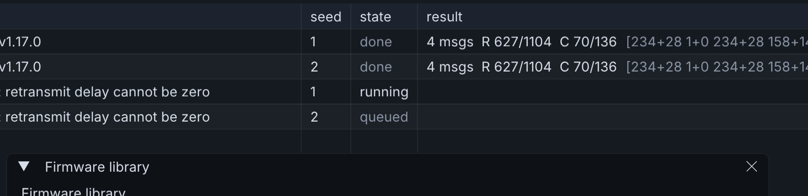

Emulating a board
Emulation runs the published firmware image — the same file that is flashed onto hardware — on a model of the chip it was built for, against MeshBench's radio channel.
It answers a question the native path cannot: does this release come up on this board, configure itself, and put a correctly formed packet on the air.
Why the boundary is the SPI bus
MeshCore reaches its radio through SPI: command opcodes, register reads and writes, a busy line and an interrupt line. Modelling the chip at that boundary means the firmware above it needs no modification, and what gets verified is the binary people flash rather than a re-implementation of what it should do.
The chip model
radioserver presents the SX1262 interface and turns transmit commands into waveforms for the channel. It runs as a separate process and is shared by all three ways of running firmware:
| firmware | connection to the chip model |
|---|---|
| native build | linked in process, no socket |
| QEMU | Unix domain socket |
| Renode | TCP |
One model rather than three means the radio behaves the same whichever way a node is run.
ESP32, under QEMU
The Xtensa path uses QEMU with an SX1262 device attached to the SPI controller. Two build requirements:
- The SX1262 device must be present in the tree being built. A build without
it produces a QEMU that starts normally and reports no chip.
--enable-gcryptis required, or theesp32machine will not instantiate.
nRF52, under Renode
The Cortex-M4 path models more of the chip, because more of it is touched before the radio is reached.
SPIM3 and EasyDMA
The nRF52840 has four SPI master instances; these boards use SPIM3 at 0x4002F000. It is identifiable from its register offsets: 0x118 is EVENTS_END, 0x304 and 0x308 are INTENSET and INTENCLR.
SPIM has no byte-at-a-time data register. The firmware writes a buffer pointer and a length into TXD.PTR and TXD.MAXCNT, the same for RXD, and triggers TASKS_START. The peripheral model reads the transmit buffer out of guest memory, runs the transaction, writes the reply into the receive buffer and raises EVENTS_END. A model that does not implement EasyDMA transfers no bytes, and the firmware waits indefinitely for a reply.
Chip select is a GPIO
An SX1262 transaction is delimited by NSS going low and then high. Renode's SPI infrastructure does not signal the end of a transaction to the peripheral, so NSS is wired as what it physically is: a GPIO pin. On the RAK4631 that is gpio1 pin 10, with the DIO1 interrupt on gpio1 pin 15.
These pin assignments are a property of the board and are recorded per board rather than per emulator.
SEVONPEND
Published nRF52 firmware sets SEVONPEND and executes WFE, which requires the core to wake when an interrupt becomes pending whether or not it is enabled to fire. The emulator's CPU core must implement that distinction, and the wake path has three parts: the pending-interrupt query, the binding that exposes it to the core, and the call that wakes the sleeping thread. Without all three the firmware sleeps and the node is silent while appearing healthy.
Peripherals touched during boot
| peripheral | why the firmware needs it |
|---|---|
TEMP | temperature read at start-up |
CLOCK | HFCLK and LFCLK start, waited on before anything proceeds |
SAADC | battery voltage |
TWIM | I2C, for displays and sensors on some boards |
| SX1262 over SPIM | the radio |
Cost and limits
Each emulated node is a separate emulator process running in real time, costing roughly one core and 150 MB.
Around eight nodes is the practical ceiling on a twelve core machine. Past it nothing reports an error: boot times stretch, simulated time falls behind the wall clock, and the network appears to go quiet.
Because execution is tied to the wall clock, two runs of the same seed do not produce the same result. Emulation is therefore used to verify that a release works, and native firmware is used for anything that is measured.
Assigning an emulated build
In the firmware library, board images are listed alongside native builds. use for role assigns one to every node of that role, and reports how many nodes that will be before it does. Each of those nodes becomes its own emulator.
